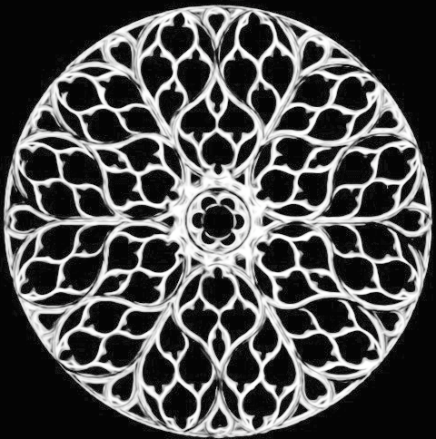

"يملك جسم ميزة التناظر إذا كان بالإمكان التلاعب به بشكل ما والحصول في النهاية على نفس الجسم الذي كان في البداية." يعود هذا التعريف الذكي للتناظر إلى عالم الرياضيات الشهير هيرمان فايل (1885-1955). بحسب هذا التعريف، فإن صورة النافذة الوردية القوطية أدناه تملك ميزة التناظر الدوراني بعد برمها 60 درجة، نحصل على الصورة الأولى بالضبط.
يسمح البرنامج على الشمال بتوليد عدة أنواع من الصور التي تملك ميزة التناظر الدوراني. يمكن تغيير موقع حبة الفاكهة بسحبها.
|
 |
نافذة وردية قوطية في كنيسة سانت شابيل في باريس